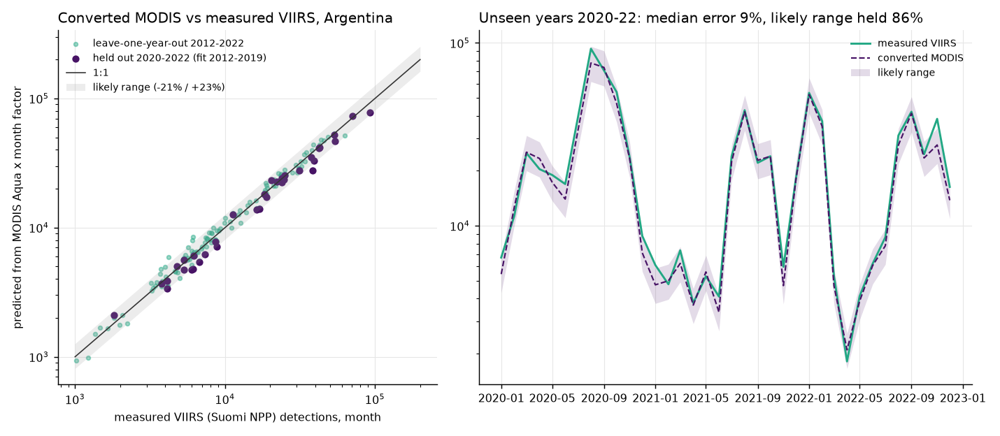

Tested on years the method had never seen
How accurate is this?
Before 2012 we convert the older MODIS camera to the scale of the newer VIIRS camera. To test the conversion we fitted it on 2012 to 2019, then converted 2020 to 2022 and compared the result with what VIIRS actually measured.
Converted against measured
Argentina, monthly detections. Fitted on 2012 to 2019, tested on 2020 to 2022.

What to notice: the dark points (months the method never saw) sit close to the 1:1 line and mostly inside the grey band. The conversion runs a little low, about 7% on average.
Small areas are less reliable
Applies to converted months only (before 2012). Months measured by VIIRS are reliable at any size.
| MODIS detections in the area and month | Likely range | Flag |
|---|
What to notice: the bars get much longer as the area gets smaller. Below about 50 MODIS detections the converted value is only a rough indication.
How to read the flags
Where it works best
- Whole country, or a large region, any month.
- Every month from February 2012: these are measured by VIIRS, not converted.
- Busy months and busy seasons, when there are plenty of detections.
- Telling a very busy or very quiet month from a normal one.
Where it does not work
- Small areas before 2012 (under about 50 MODIS detections in the month).
- Quiet months, when MODIS may have seen nothing at all.
- MODIS after 2022: its satellites drift to different overpass times, so we use VIIRS only.
- Provisional months (latest few): near-real-time data can change, so they get no comparison.
- Anywhere other than Argentina: not tested.